Typescript Playground
https://www.typescriptlang.org/play/index.html
Enum's Type guards and hell
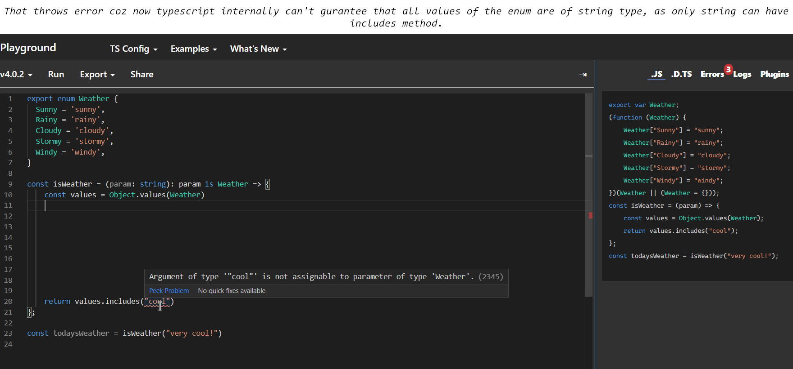
A good way!
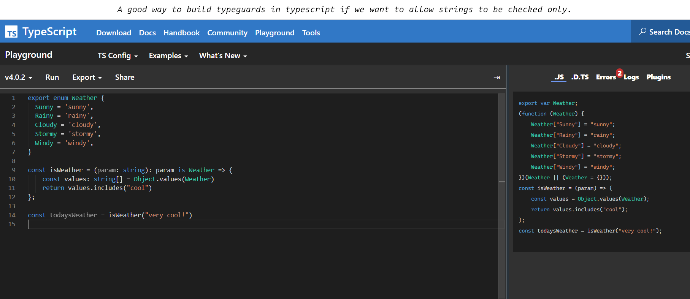
Type Aliases
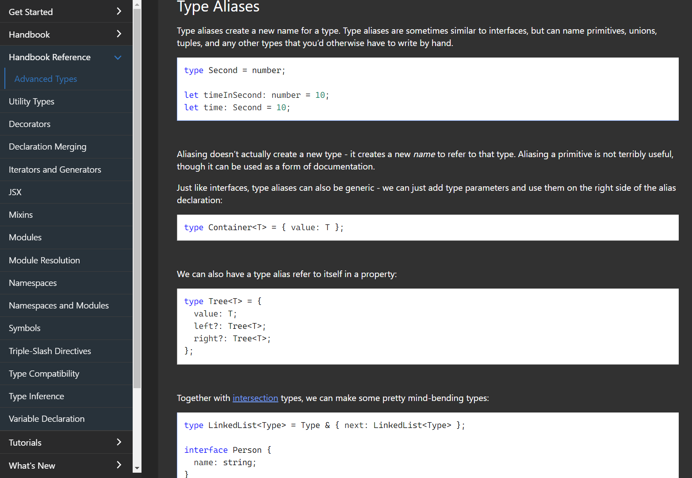
Object Destructuing type assertions
const { name, age } = body.value
const { name: string, age: number } = body.value
//Throws error as `string` is new binding for `name`, and `number` is new binding for `age`
//We actually want to assert types not assign new bindings to destructured variables!
//The solution is:
const { name, age }: { name: string; age: number } = body.value
// Though best way to approach this would be to use an `interface`
interface DogI {
name: string
age: number
}
const dog: DogI = body.valuesource: https://flaviocopes.com/typescript-object-destructuring/
Union Operator( | )
It acts as OR operator.
let someValue: string | number = "sahil"
let someValue: string | number = 24
// So, thats like someValue can be string or number.Intersection Operator ( & )
So, it works as to add multiple types to get a single type that has all the type annotations. We can also say it works as ADD OPERATOR because it adds different types to single type.
type nameType = { name: string }
type numberType = { phone_number: number}
const message: nameType & numberType = {
name: 'hello world',
phone_number: 234
};Function typings
interface SearchFunctionInterface {
(source: string, subString: number): boolean;
// We could have written that like -
// (arg0: string, arg1: number): boolean;
// So, (arg0, arg1) represents **parameters**.
// And, : boolean represents the **return_type** of function.
}
let mySearch: SearchFunctionInterface;
mySearch = function(firstThing, secondThing) {
let result = firstThing.search(String(secondThing));
return result > -1;
}Defining Object's type - Interface
interface BirdObjectInterface {
alive: boolean;
// alive `key` has `value` of type ``boolean``.
fly(): string;
// fly `key` has `value` of type ``method``(*Also, method has return type of ``string``).
layEggs(): number;
// layEggs `key` has `value` of type ``method`` (*Also, method has return type of ``number``).
}
interface FishObjectInterface {
swim(): string;
layEggs(): number;
}
// #Object with given proper interfaces-->
let creature: BirdObjectInterface = {
alive: true,
fly : function (): string {
return "kaka"
},
layEggs: () => 23
}Extending interface to include more types:
interface Shape {
color: string;
}
interface Square extends Shape {
sideLength: number;
}
// Amazing implementation of intefaces
let square = {} as Square;
square.color = "blue";
square.sideLength = 10;
// Below would throw error!!
square.sideLength = "common man!"• Interface can extend multiple interfaces-
interface Shape {
color: string;
}
interface PenStroke {
penWidth: number;
}
interface Square extends Shape, PenStroke {
sideLength: number;
}
let square = {} as Square; /* #1 */
square.color = "blue";
square.sideLength = 10;
square.penWidth = 5.0;
// #Learn: If we have written below statement instead of /* #1 */ line, like:
// let square: Square = {}; #This would have thrown error like,
// Type '{}' is missing the following properties from type 'Square': sideLength, color, penWidth(2739)"Function" built-in interface for function
let myMethod: Function
// # Below would throw error like -> Type 'number' is not assignable to type 'Function'.
myMethod = 20Sequence and parallel reading of files(# non typescript topic)
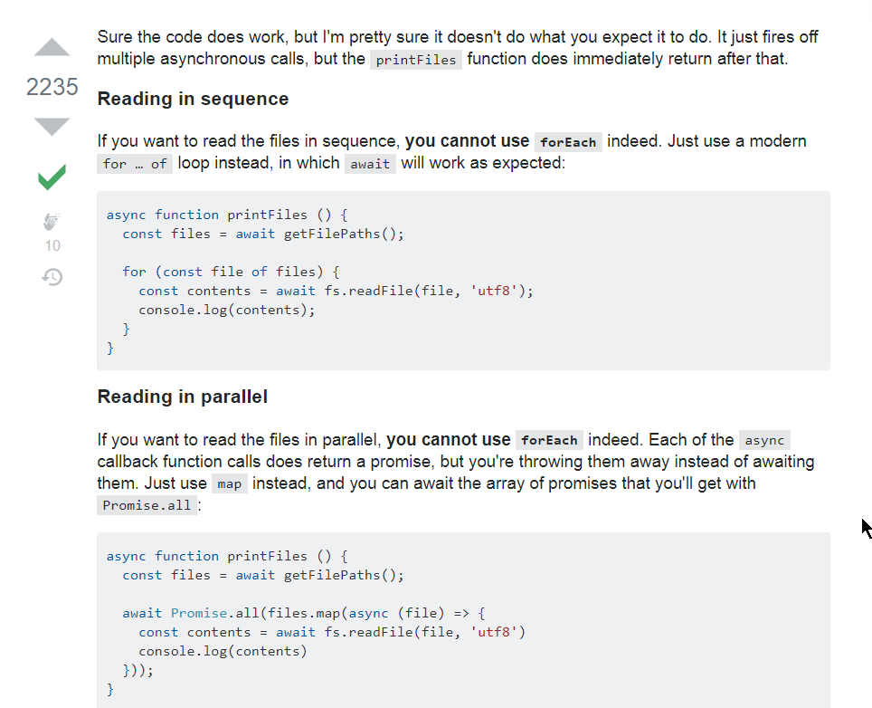
pkg - executable maker for node programs(# non typescript topic)
$ npm i -g pkg
#To make an executable, just exeucte like
$ pkg <file-name>.js
#The above syntax is not providing any target like windows, linux, or mac, so it compiles for all three. Which we don't want, try the below command.
$ pkg -t node12-win-x64 <file-name>.js
#Thats all, this would compile only for windows. Though you can always get help via
$ pkg -h.tslint - Ignore Files/Folder to check with typescript copiler
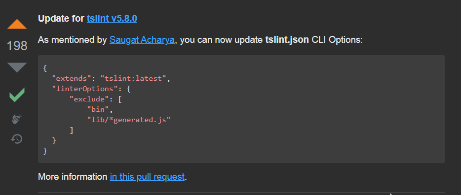
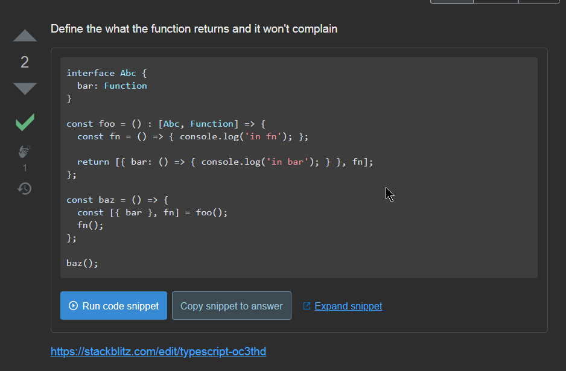
semantic ui
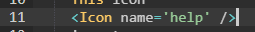
send pretty json
Though this mehtod is good to view things on a webpage with no extra extensions in the browser. But it increases the size of the output, thus might be a little bulky in scenarios where we are dealing with heavy data.
res.header("Content-Type", 'application/json');
res.send(JSON.stringify(DESIRED_object, null, 4));
# Below line isn't good any. You need to explicitly use JSON.stringify() to get it the desired shape.
// res.json(singleEntry, null, 4);Using params:
req.params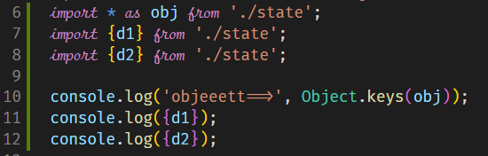
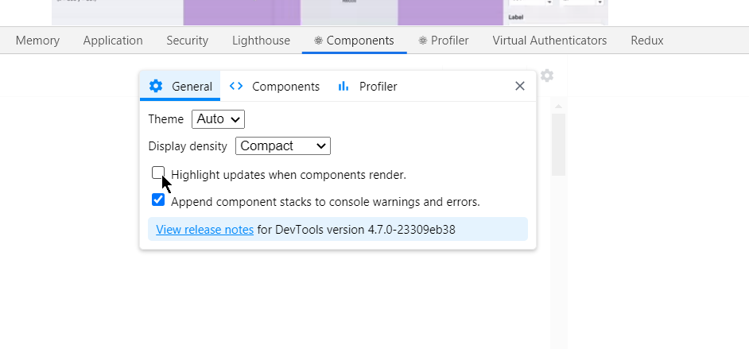
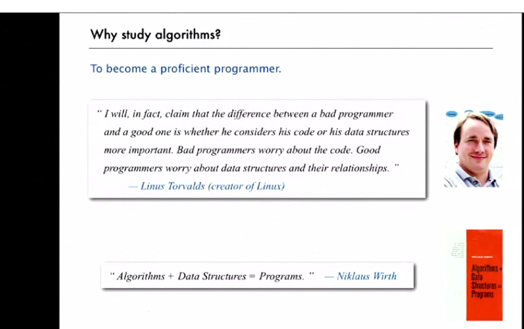
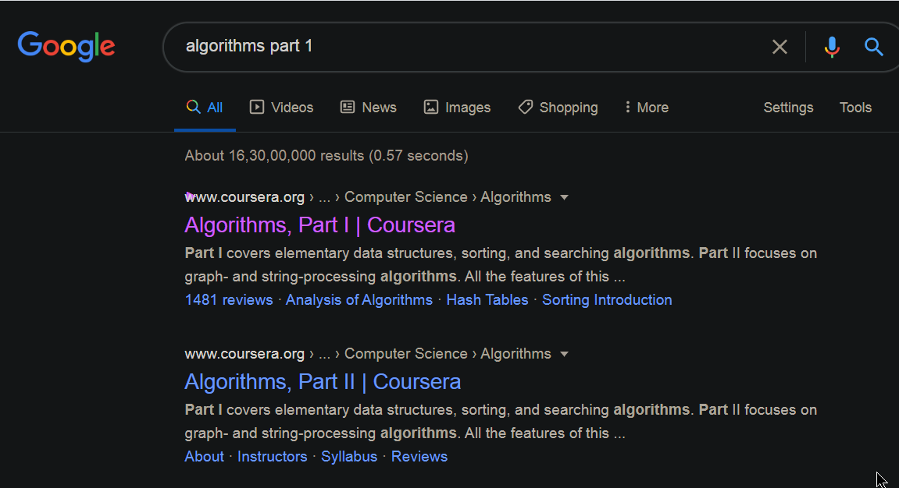
kotlin projects , kotlin trending repos@officialKotlin
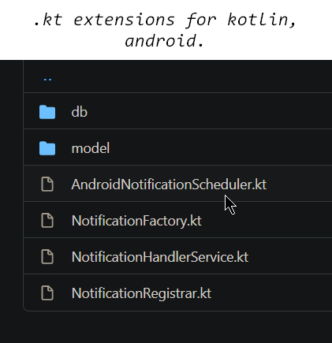
Object.freeze method
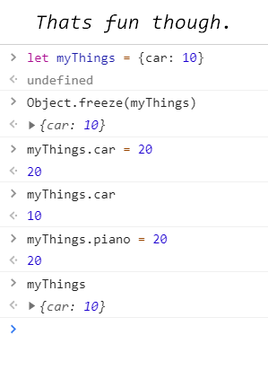
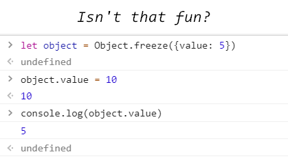
Typescripts gold features-
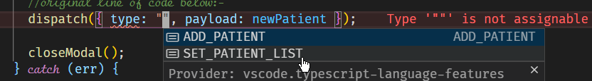

npm-safe-install - a waste of time
This dependency isn't any better coz its just too lazy to detect what's linked and it install those linked if they are present in the package.json file, and that's just redundant coz we have just liked to that to be able to access that dependency for. Just waste of time. nsi is an alias for this command.
What all this nsi does is, just delete everything in the node_modules folder and then install everything from package.json file(do not link anythink, heckkk), and then restores all the symlinks that were present earlier in the node_modules folder.
Unistalled this heck of waste of time.
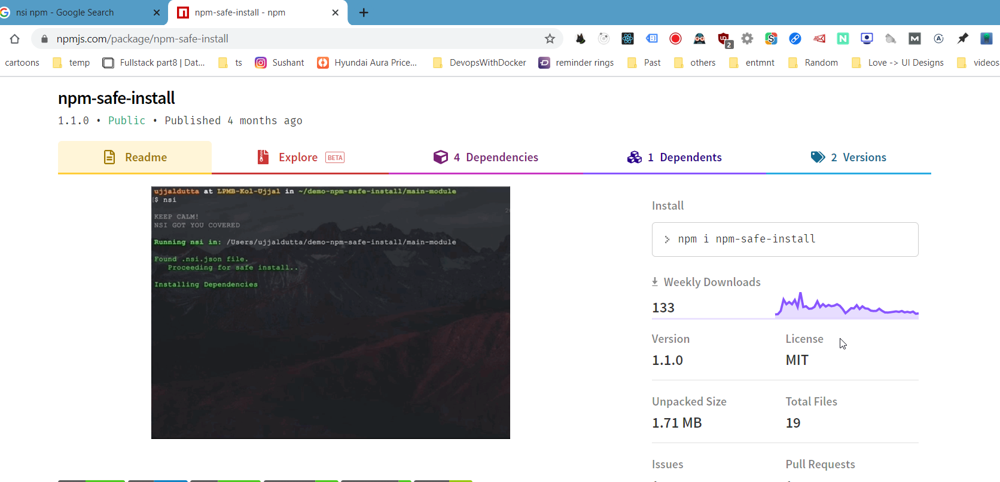
npm link --save - the issue that is long lived form 2011
https://github.com/npm/npm/issues/1166
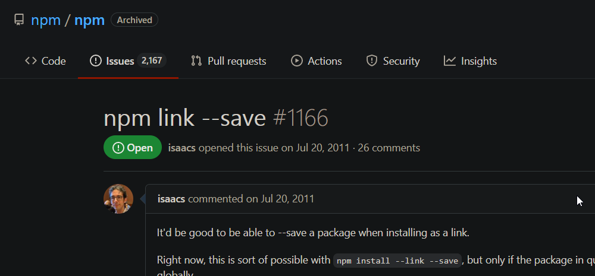
A required knowledge on the basis of npm link-
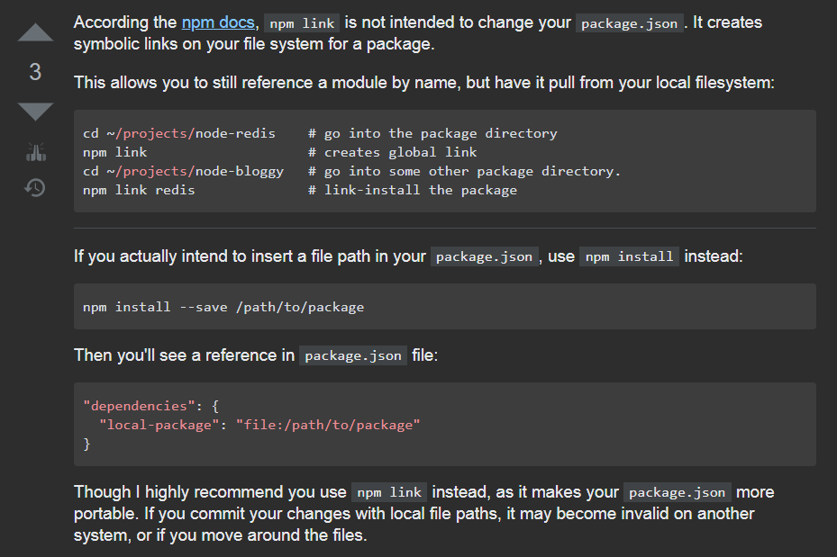
A unrealitic way to work with package.json file though all this can be done with npm i --linknow.
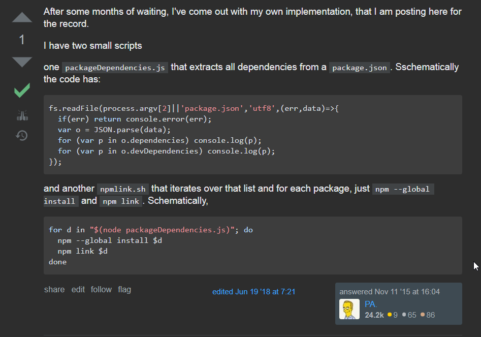
https://docs.npmjs.com/misc/semver
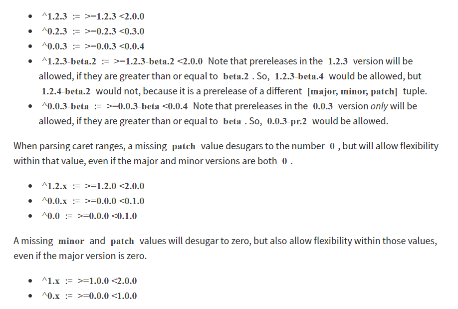
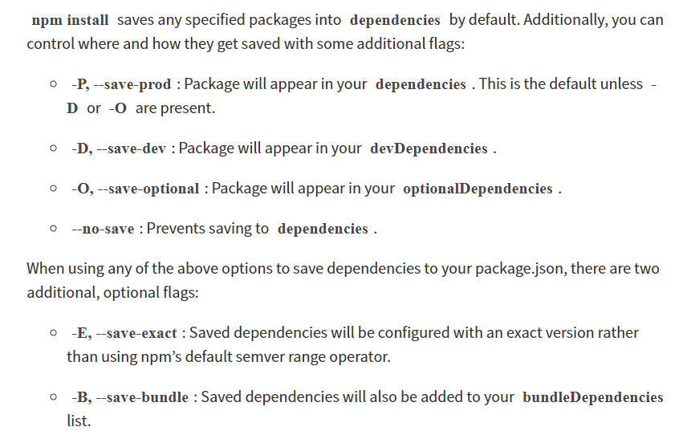
#prefer
$ npm i --link
#below one doesn't add anything to the local package.json file
$ npm i <pkg> --link , So avoid this command, use nls but remember it updates the same package package.json file.Scoped dependencies in node
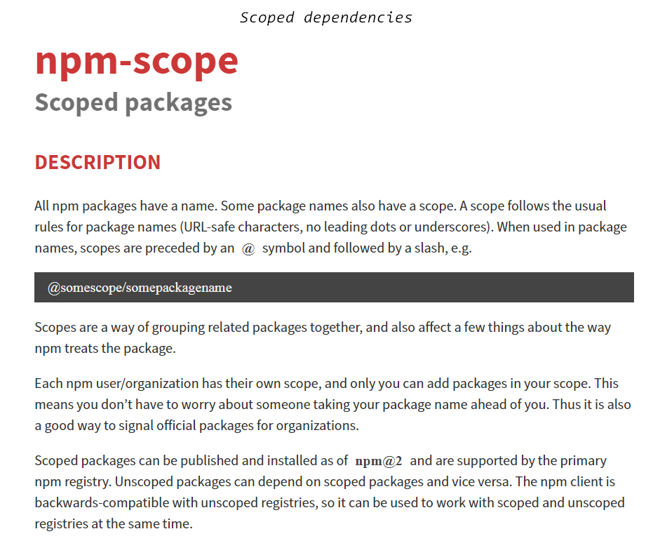
Bundled dependencies in node
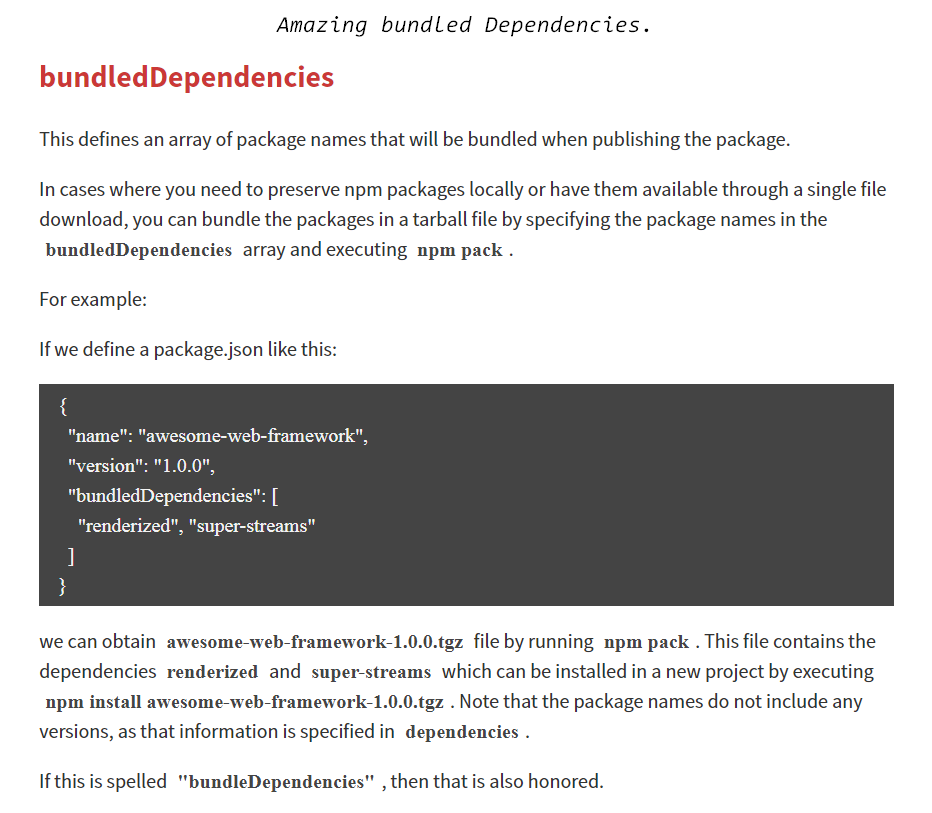
So, preferable you should use a few commands only-
nls <pkg> #To install a dependency but will overwrite the package version in the local package.json file
npm i <pkg> --link
#Above command just don't add anything to the package.json file, but installs globally and then link to it in local node_modules folder. Not recommended as it does the same destructive behavious like would remove the symmlinks that are not in package.json file.
#USE NPM LINK <PKG> instead. Safer option, as it isn't destructive at all. Doens't even checks the local package.json file.npm i --link
$ npm i --link
#This is really phenomenal, try if for few years, it doesn't download dependencies much rather prefers a way to fetch older caches and install them as globally and there's a verly littlt chance it would break anything, and it works offine, thats one of the best thing.
#This works offline too.
#This is a pretty good option to install a project, though using nls is also favourable
#Above command installs all packages globally and links to them, from local package.json file.
#TIP: Works offline too, though throws a warning that using stale data, but its okay though.$ npm install formik --link
#Just simply perfer, npm i -g formik && npm link
#Above command just installs/updates formik package (internet must be available, if no earlier version is present, it won't download it again though), and then does npm link formik.
Above command is just a short of-
$ npm i -g formik && npm link formik
**
So, npm install <pkg> --link is official alternate for nls <pkg> but the former one requires the internet to be working, while the second doesn\'t. Thats where nls wins.npm uninstall
So, the learning is to never unlink but actually delete the linked symlinks manually from the node_modules folder.
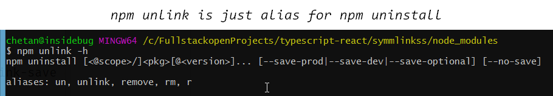
For defining indentation for switch case(by default its set to 0 indentation)
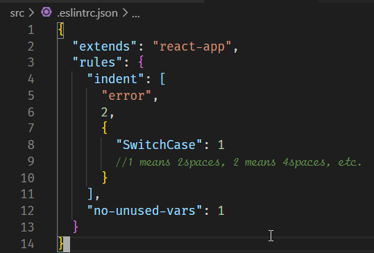
Use Ctrl+L and then press, alt+ctrl+right arrow to get the desired block select with just those two shortcuts.
You can create a .eslintrc.json file in the src foler(or anywhere you want it) to overwrite the settings for eslint in current project
src: link8
{
"extends": "react-app",
"rules": {
"indent": [
"error",
2
] // A custom style-related rule for example
// More custom rules here
}
}We have to use hooks unconditionally - deeper meaning(do not define any hook in some condition)
We love hooks unconditionally. ;D
Using DOM
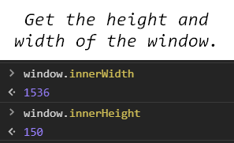
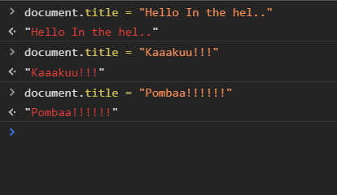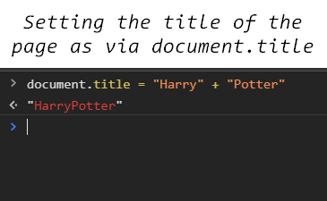
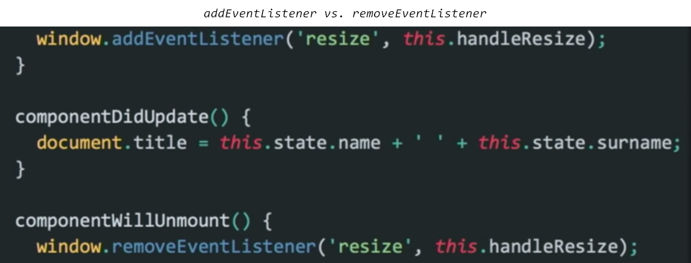
Ultimate Interfaces
Using multiple interfaces with same name is allowed, but multiple types with same name isn't for e.g.,
I added another interface with a property love, i.e.,
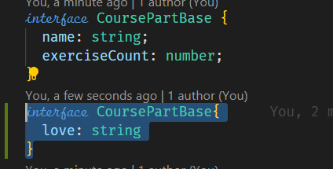
So, both the interfaces combines to make the interface and doesn't cause any error for that.(But using types would have thrown as editors error like "not allowed, already declared"). Hence, it causes this errror as the data doens't include the love property, though you can make the property optional to get rid of the error, as that would make it optional with ? operator of typescript in the interface definition.(after the errors image)
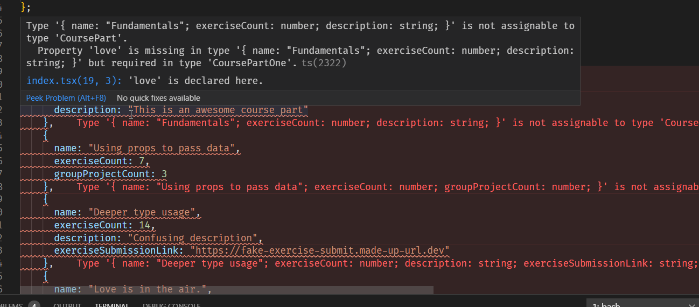
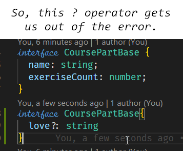
So, errorrs are clean now.
Using express's inbuilt types for defining types of different things for request and response-
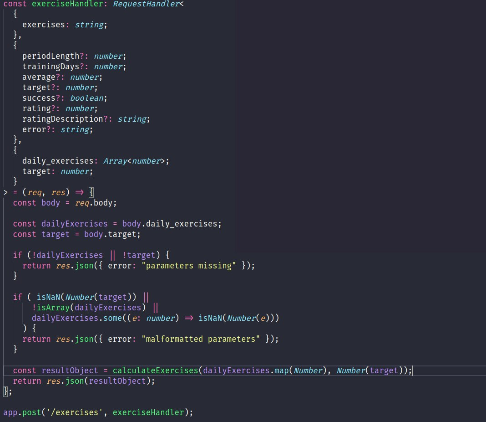
-credits- AMAN
Also, the first params for the route are just redundant as we're not using exercises anywhere.
{exercises: string} and we can actually write more descriptory thing there, like {[index:string]: string}.
https://github.com/DefinitelyTyped/DefinitelyTyped/blob/master/types/express/index.d.ts#L109
Kalle Ives: Express also has a RequestHandler type which can be used to add types to a request handler. It has generic types, which can be used to e.g. type the request body:
Kalle Ives: This is something I experimented on a few weeks back. You will se a pattern.
The first type parameter of the RequestHandler is for req.params,
second parameter is for the response.body and the
third one is for req.body
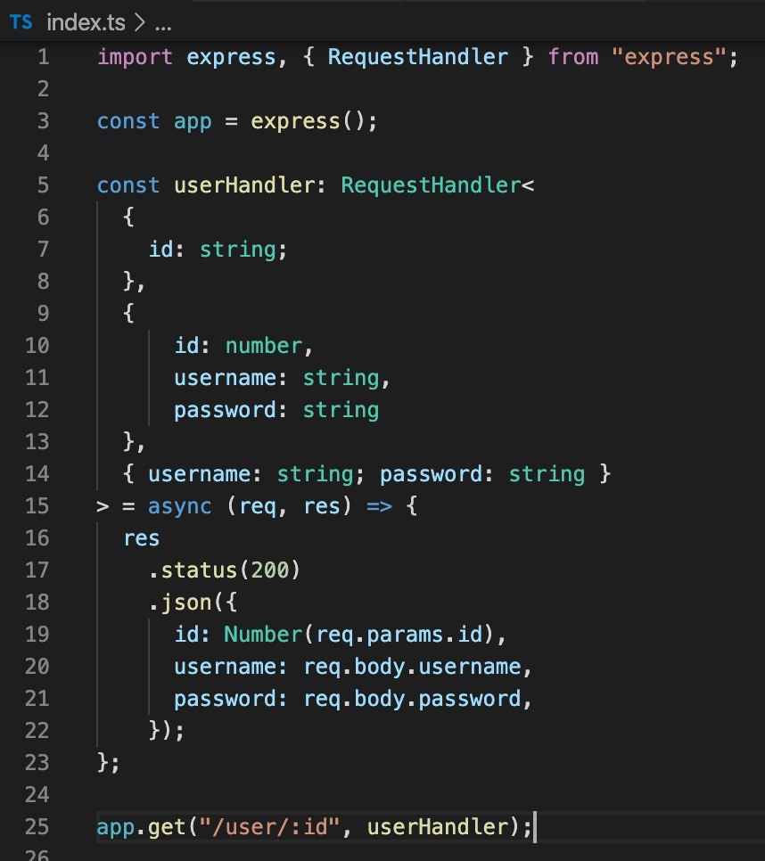
Using as operator in request of express-
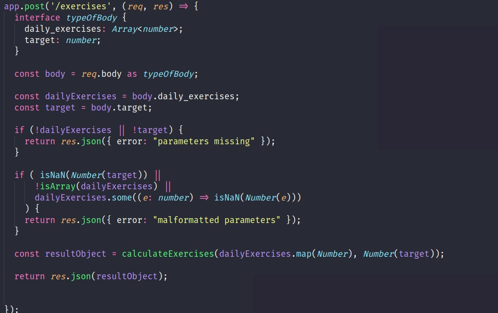
-credits- AMAN
Typescript using array within properties-
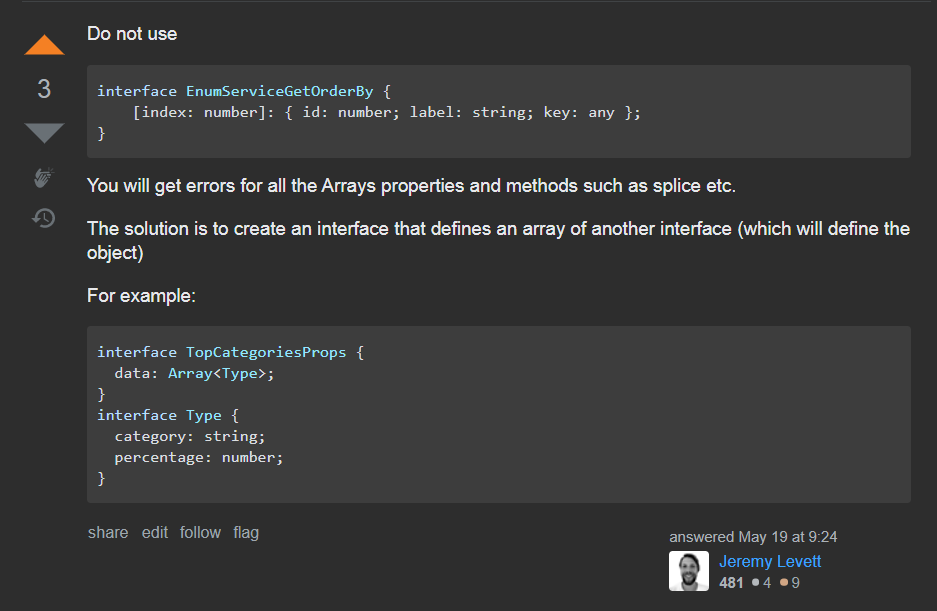
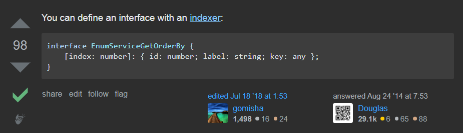
Assinging types to process variable in typescript
#process.env process, typescript process.env variables link
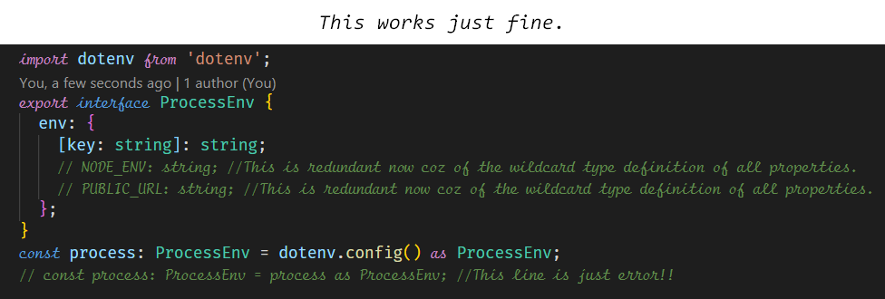
as chaining
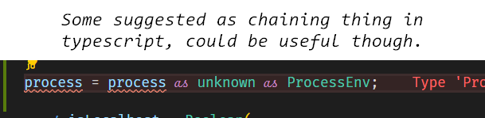
Working with eslint requires package lint to be installed-

Fixing above issue is to run below command-
$ nls lint
#This will install lint globally(if not installed), and then will link to it in the node_modules folder. If already installed, you may use =>
$ npm link lint #This should work good though.Catching errors as typed
} catch (e) {
// const message2 = e.message; // This will give error as unsafe assignment of an any value.
// const message = (e as Error).message; // This works flawlessly.
res.status(400).send((e as Error).message); // This works good102.
// res.status(400).send(e instanceof Error ? e.message : "no message"); // This works good101.
// res.status(400).send(e instanceof Error ? e.message : "no message"); // This works good100.
// res.status(400).send(isError(e) ? e.message : "No message"); // This works good0.
// e instanceof Error && res.status(400).send(e.message); // This works good1.
// isError(e) && res.status(400).send(e.message); // This works good2.
// Old coders style below- //This works good3.
// if(isError(e)){
// res.status(400).send(e.message);
// }
}Hello there!! go on..
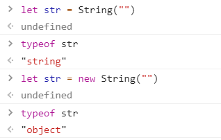
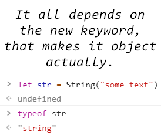
typescript eslint no explicity any-
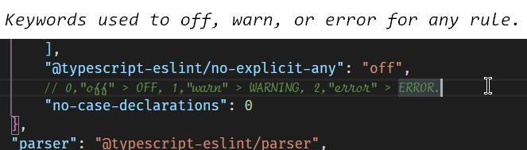
You may read npm scope - link
Below image from src- link
[This is actually referencable to the better-link-saver(combined three softs, (one is nls - npmLinkSaver))]
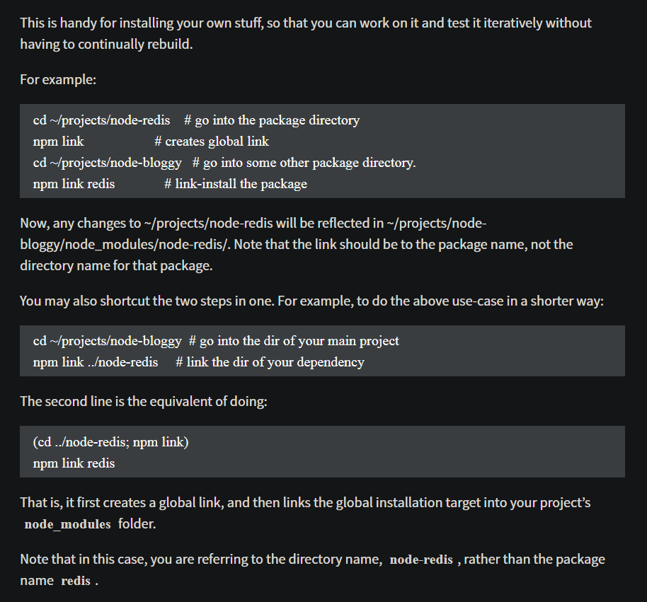
Whats lint in npm
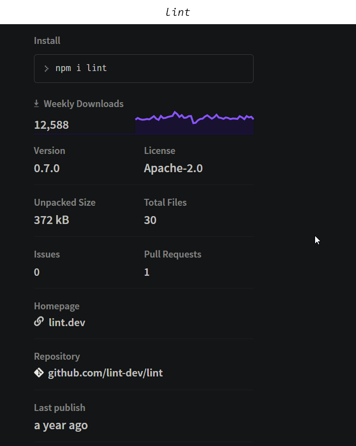
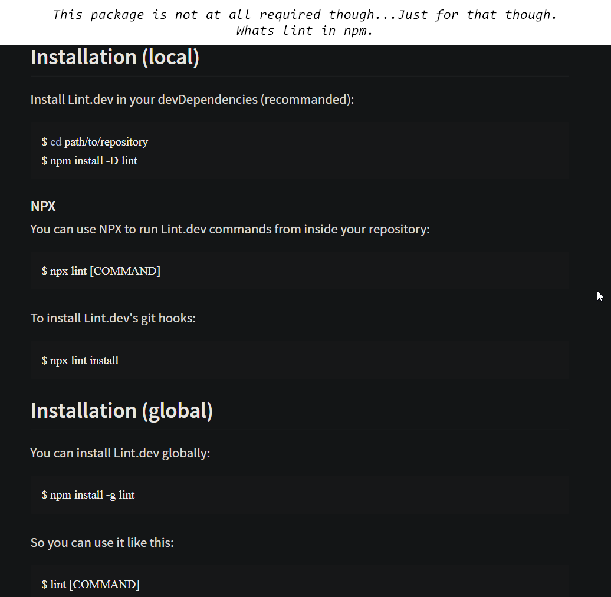
Whats that??
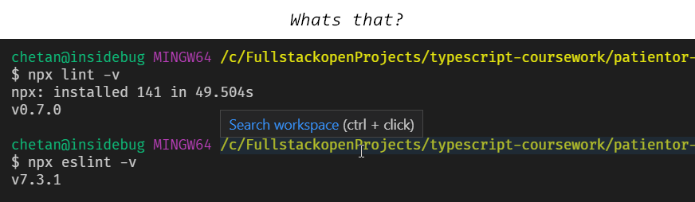
VScode's eslint worked after doing a npx lint .
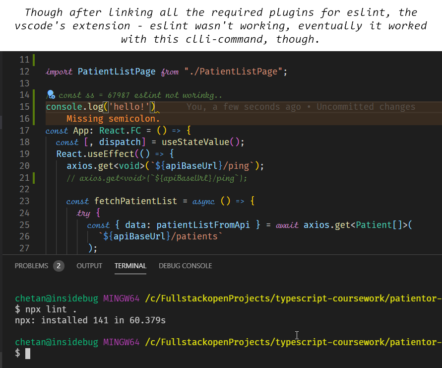
Fixing error in global node_modules is easy like this-/
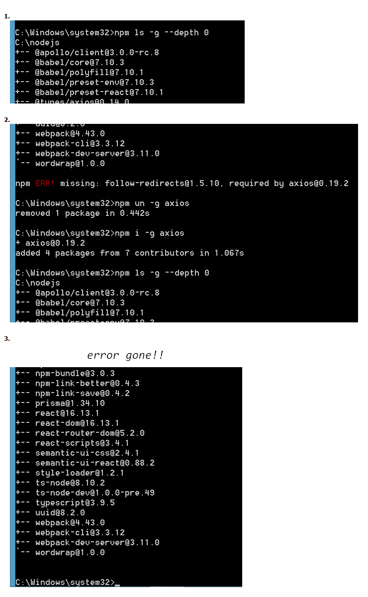
nql
npm-quick-link find its usage, it did some trouble last time though, as it created a symlink in c:\node\node_modules folder and showed it as a dependency when we did a npm ls -g --depth 0
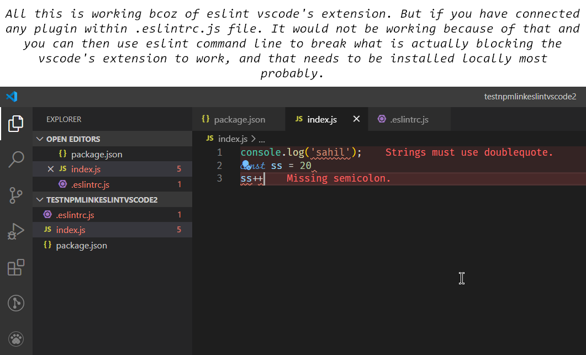
Hence, using commandline npx eslint . would be able to tell why is vscode eslint extension is not working at all. So, just install any requiring extension, it could probably be - eslint-plugin-react or @typescript-eslint/parser or @typescript-eslint/eslint-plugin or anything you're using in .eslintrc file, its very easy to find out from there too, though npx eslint . command will tell exactly whats missing. BEWARE:: You should never ever install any of dependencies eslint-plugin-react or @typescript-eslint/parser or @typescript-eslint/eslint-plugin locally via npm i <pkg-name> because this way you'll end up installing complete package from the beginning form the package.json(and that might unlink some packages you linked somehow which aren't mentioned in local package.json, though it should do any change in global node_modules too, but you should never use npm i , but use npm i -g
eslint
It requires you to have it installed as a local dependecy to be able to run via command line, but doens't need to be present of linked for the editor's extension to work.
Though, editor's extension required the .eslinrc file, and it also needs the appropriate plugins metioned in the eslintrc file to work, otherwise it won't work at all.The best way to deal with eslint error while starting react-server is to just use below variable to disable the eslint version checking simply-
SKIP_PREFLIGHT_CHECK=trueThere would be errors other than this, if there are you just need to fix it in the files or the eslintrc file.
temp--
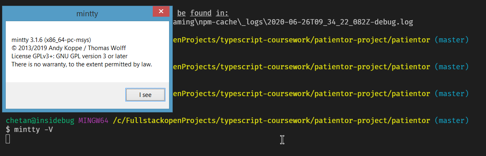
Solution:-
The symlink is created with the mklink for node_modules folder, but the problem with symlink of node_modules folder for the need of globalspace2 for eslint 6.8.0, is that when you do a npm i
Creating symlinks in windows
$ mklink /d LinkName folderName
$ mklink /d myLink ..\someFolder # This createsa link named myLink to someFolder in its parent folder.
#Note: symlinks(symbolic links) can only be created with admin cmd. Tip: Use=> ALT F,M,A
#Symlinks created could be moved/copied anywhere but they would just WON'T work.Opens link for funding for the desired package.
Dealing with react-scripts version of eslint
We're dealing bcoz, when we run npm start, it gives error with eslint config, says to do SKIP_PREFLIGHT_CHECK=true in env to avoid it.
So, you might try to do-
npm link react-scriptsto get the eslint under it to be discovered by the current node project but it would not detect it. So, the last change is to try to install a separate version of eslint in local project with npm i eslint@6.8.0 and when you try to do that it gives error. And it can be fixed via npm cache clean --force [The screenshot is somewhere up on this page to verify it.] So, the next option is to install react-scripts in local project, via npm i react-scripts@requiredversion.
New swithing tabs in panel(newly created- #my shortcuts)
Use: Ctrl + Alt+ J to join a collaboration session link via vs live share
Also,
This is great to work with source code mode too, as it allows to get rid of image context menu(copy image to, upload image, zoom image in typora) when we press enter. use ctrl+/
Promblem with graphql in global node_modules (npm list -g was throwing error actually, hence fixed with this)
src: link
Find the age of windows os
CMD
$ systeminfo|find /i "original"
Output:
Original Install Date: 25-Jun-18, 6:35:21 AM
_
POWERSHELL
$ $os = get-wmiobject win32_operatingsystem
$ $os.ConvertToDateTime($os.InstallDate) -f "MM/dd/yyyy" So, I lost some work, and now I need to coverup.
$ tsc --init
#This will create the tsconfig.json fileExample file created with the above command here@gist
What do you need to//
npm-link-better[LATEST tech for global usage]
update==>
Install the newer version of npm-link-better from the linkimportant link after this code snippet.
Sometimes, installation of a package doens't work siply it throws that file already exist, and suggests you to delete them first or overwrite them with the --force switch.
$ npm i -g npm-link-better
#This failed, said some files already exist, you first delete them or use the --force switch to overwrite them like : $ npm i -g npm-link-better --force
And I did the --force things and the package was good enough now.
Next you can now try uninstalling the global package again and installing it like-
$ npm un -g npm-link-better
$ npm i -g npm-link-better #This will work smoothly to install now with no errors.
**
So, how to use it...
USAGE:::----
$ nlq #Execute in a project.
# Above command, will automatically link all the packages from local package.json file to the global ones with goodness.
$ nls <dependency> <dependency2> [<more dependencies here>]
#Above command will first install it globally and then link to it and then add the entry in local package.json file.
$ nls -D <dependency> <dependency2> [<more dependencies here>]
#Above command will save it for development dependency. Rest is same.To be able to save to local package.json file on the command npm link
nls is amazing when creating your own projects, but when you are using someone's project you must use ==npm link
$ nls expres // single links
$ nls express morgan // multiple links
$ nls -D express // links in devDependencies // -D is used in npm i -D <pkg-name> (for saving as dev dependency, same pattern is followed here)*
Reload Extension for vscode
You do not need this extension for anything. Not for even typescript types definitions(npm link or npm install), vscode is just too much smart to detect dependencies in your node_modules folder. But BEWARE, that you use complete package name to link to the repository, otherwise vscode won't pick the type definitions from the dependencies in the @types folder.
*
Link complete local node_modules folder to global node_modules insttead of linking individual dependencies-
$ npm link
This is just amazing, it links your local node_modules folder to the global node_modules folder, and doesn't consume$ npm link @typescript-eslint/eslint-plugin @typescript-eslint/parser express @types/node @types/express#Note: npm unlink will remove the package from the local package.json file.
(Destructive command, but doesn\'t alter anything in global node_modules folder)
$ npm unlink @typescript-eslint/eslint-plugin @typescript-eslint/parser express @types/node @types/express
#This command just reverses the command in the above snippet. (Won't cause any sideeffect in global packages)# IMPORTANT: YOU NEED TO USE --no-save switch to be able to let package.json retain the package name after the unlink command finishes:-
npm unlink --no-save @typescript-eslint/eslint-plugin @typescript-eslint/parser express @types/node @types/expressSome interesting casts-
*
Send formatted json with express-
Note: you need to refresh with Ctrl+shift+f5 for once to view the updated formatting of the json, otherwise it'll fetch the old formatting from the cache when you use simple refresh. link

npm install
$ npm i --only prod
# This will check if there is any production dependency that
$ npm i --only dev Global packages under the hood
$ npm list -g --depth 0
$ npm ls -g --depth 0
$ npm list -g --depth=0 (this and above commands are same)
//Get the list of dependencies with their appropriate versions installed.
//This will show you any dependent for the current dependencies that you need to install(which might be disturbing dependency tree in global node_modules).$ npm list # npm ls (is also an alias)
aliases: ls, list, la, ll
#This will list for local packages.OUTPUTS:-
#Output
+-- @types/express@4.17.6
+-- @types/node@14.0.13
+-- @typescript-eslint/eslint-plugin@3.3.0
+-- @typescript-eslint/parser@3.3.0
+-- elasticdump@6.31.4
+-- eslint@7.2.0
+-- express@4.17.1
+-- jest@24.9.0
+-- live-server@1.2.1
+-- markdown-styles@3.1.10
+-- nodemon@2.0.4
+-- npm@6.14.4
+-- npm-bundle@3.0.3
+-- prisma@1.34.10
+-- react@16.13.1
+-- react-dom@16.3.1
+-- react-scripts@3.4.1
+-- ts-node@8.10.2
+-- ts-node-dev@1.0.0-pre.49
`-- typescript@3.9.5Updating, upgrading, up npm package-
$ npm update [-g] [<pkg>...]
#-g is for global config
aliases: up, upgradenpm-uninstall
aliases: remove, rm, r, un, unlink
$ npm uninstall sax*
$ npm prune
#This command will uninstall all the packages that are listed in node_modules folder which are not present in the package.json file.Listing indivicual package via npm list
$ npm link react
$ npm link react react-dom
#This works too.
# NOTE: You must have the dependency as globally installed for what you are creating the symlink. npm links are just awesome, when you do
$ npm install
# will NOT uninstall any symlinks you have created(You must have it in package.json file). So, you can just use symlinks with easy anytime.npm list, npm ls
$ npm ls --only prod
$ npm ls --only dev
*
$ npm ls --only=prod
$ npm ls --only=dev
***
$ npm install --only prod
$ npm install --only=prod
*
ts-node for development
$ npm i -g ts-node-devTo install support for typescript
$ npm i -g ts-node typescript
#You should install them globally only as you just the executables over the commandline.
#Both are required to be used via cmd line with commands like,
$ ts-node <file-name>
$ tsc <file-name>
*
When using apps created by create-react-app, it reqires you to have it installed locally, so it will not allow to start the app, unless you install in locally. BETTER THING is to just link it with global one-
npm link typescript
THAT WORKS LIKE CHARM!!npm install --save-dev @types/react @types/express @types/lodash @types/jest @types/mongoose and so on and so on. The *@types/** are maintained by Definitely typed, a community project with the goal to maintaining types of everything in one place.
Typescript hero extension-
For Visual Studio Code you need the typescript hero extension.
Hold down Cmd (on Windows: Ctrl) and click on this link to jump to header Block Elements.
To install types support for node internal modules :happy:
:family_man_girl_boy: this text is red
$ npm i --save-dev @types/node
#This has to installed as local dependency, installing globally doesn't work.
++++
<mark>Somethingg</mark>
++++
__
For using global packages via npm link
$ npm i -g @types/node
#For the use of gloablly installed modules you need to create a symlink(known as shortcut in windows) to the global module. You can easily do this with below command -
$ npm link @types/node
__
You should use
$ npm link @types
bcoz this will link the complete @types folder from global directory(c:/nodejs/node_modules/@types/), notice that this commmand give error, you just need to ignore that. That error is just redundant.The *@types/** are maintained by Definitely typed, a community project with the goal to maintaining types of everything in one place.
eslint
==You may disable prettier now onwards==
what to do, install globally or locally or both? link
==My new anwser: Install globally, and use it everywhere. And when react says you have another version, silent it with pref_light_check=true (check the variable name from the same error :D). And thats it. Use newer version always. Thats stable, thats why they have released it.☺==
The simple answer is, local one can only be accessd by specifying a script in package.json for that, and running the command like: ==npm run lint== or like using from the local executable with=> ==node_modules/.bin/nodemon index.js== or you could you ==npx eslint== too for using the locally installed version.
=="lint": "eslint --ext .ts ."== , Globally installed version of eslint is good engough. But you must check that the project is compartible with that, via looking the version of eslint used to make the eslintrc.json at the time of the project initiated. Otherwise its just fine. Coz ^ in front of version number says, that a newer patch or newer minor version (the second of the 3 set version number) of eslint would be supported. The problem arises when you want to access a different version, so when it is the case, you must install a local that version of the eslint(that's automatically done with npm install though). Even if you haven't installed eslint locally, it would still work with npm run lint command bcoz, npm will fetch from the global dependecy automatically.(FYI: vesioning semantic of npm: major no., minor no., patch no.)
npm i -g eslint
npm i -g @typescript-eslint/parser
#eslint can be used via-
$ eslint .
#But you need to initialize the current repository with a eslint(or you must have eslintrc file in the folder)
$ eslint --init
#Add a script entry in the package.json like-
"lint": "eslint ."Eslint runtime vscode extension- https://marketplace.visualstudio.com/items?itemName=dbaeumer.vscode-eslint
Answering questions on eslint --init
Excluding folders from eslint
Semicolons settings-
Disabling no-console
Assigning Ctrl+k Ctrl+F to closing folder/workspace
Cloning to a desired name folder
Using cdn for react and other useful resource
End of line characters in vscode
argv array in node
Autocomplete in ts
Amazing format on paste option(Do this now..)
Knowing default formatters in vscode
is methods in javascript for checking type-
Two ways to define type for arrray type in typescript
Debugging easy-